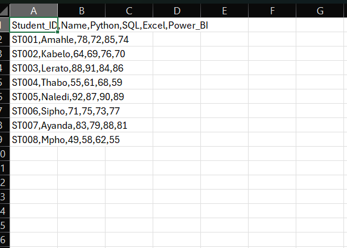

PYTHON • CSV • DATA ANALYSIS
Student Performance Data Analyzer
A beginner Python project that reads CSV student marks, calculates averages, ranks performance and identifies subject-level strengths and areas for improvement.

What it demonstrates
- Reading structured CSV data
- Functions, loops and conditions
- Average calculations and sorting
- Simple data analysis and performance categories
Project files
Python source
import csv
from pathlib import Path
DATA_FILE = Path(__file__).with_name("student_scores.csv")
SUBJECTS = ["Python", "SQL", "Excel", "Power_BI"]
def load_students(filename):
with open(filename, newline="", encoding="utf-8") as file:
return list(csv.DictReader(file))
def calculate_average(student):
scores = [float(student[subject]) for subject in SUBJECTS]
return sum(scores) / len(scores)
def performance_level(average):
if average >= 75:
return "Excellent"
if average >= 60:
return "Good"
if average >= 50:
return "Satisfactory"
return "Needs Improvement"
def subject_averages(students):
result = {}
for subject in SUBJECTS:
scores = [float(student[subject]) for student in students]
result[subject] = sum(scores) / len(scores)
return result
def main():
students = load_students(DATA_FILE)
for student in students:
student["Average"] = calculate_average(student)
student["Performance"] = performance_level(student["Average"])
ranked = sorted(students, key=lambda s: s["Average"], reverse=True)
subject_stats = subject_averages(students)
print("STUDENT PERFORMANCE ANALYSIS")
print("=" * 60)
for student in ranked:
print(f"{student['Name']:<14} {student['Average']:>5.1f}% {student['Performance']}")
class_average = sum(s["Average"] for s in students) / len(students)
print(f"\nClass average: {class_average:.1f}%")
print(f"Top student: {ranked[0]['Name']} ({ranked[0]['Average']:.1f}%)")
print("\nSUBJECT AVERAGES")
for subject, average in subject_stats.items():
print(f"{subject.replace('_', ' '):<12}: {average:.1f}%")
strongest = max(subject_stats, key=subject_stats.get)
weakest = min(subject_stats, key=subject_stats.get)
print(f"\nStrongest subject: {strongest.replace('_', ' ')}")
print(f"Area for improvement: {weakest.replace('_', ' ')}")
if __name__ == "__main__":
main()
Sample output
STUDENT PERFORMANCE ANALYSIS ================================================== Naledi: 89.5% - Excellent Lerato: 87.2% - Excellent Ayanda: 82.8% - Excellent Amahle: 77.2% - Excellent Sipho: 74.0% - Good Kabelo: 69.8% - Good Thabo: 60.8% - Good Mpho: 56.0% - Satisfactory Top student: Naledi (89.5%) Strongest subject: Excel Area for improvement: Python